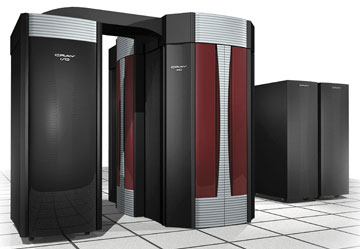
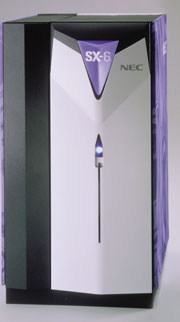
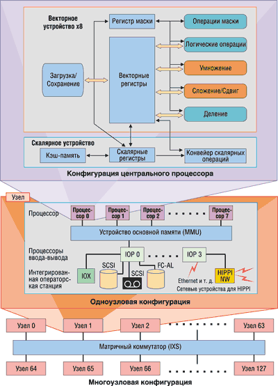

Олег Спиряев
Рынок суперкомпьютеров довольно узок, на нем работают в основном крупные американские и японские корпорации. Когда профессионалы слышат слово "Cray", им сразу представляются сверхмощные вычислительные машины. Ничего удивительного в этом нет - Cray никогда не производила офисных систем или ПК.
Немного истории
Суперкомпьютеры Cray получили свое имя в честь изобретателя этих машин, американского инженера Сеймура Крэя (Seymour Cray). Он всегда вел скромный образ жизни, и журналистам о нем известно очень мало. Крэй с детства увлекался электроникой. В 30-х годах он занимался конструированием домашних радиоприемников и телефонов, а в 50-е годы начал работу над компьютером на транзисторах.
В 1972 г. Сеймур Крэй, к тому времени уже бывший сотрудник и один из руководителей фирмы Control Data Corp. (выпускавшей, в частности, мэйнфреймы CDC для научных применений), организовал собственную компанию Cray Research, которая занялась проектированием сверхбыстродействующей ЭВМ, известной под названием Cray-1.
Быстродействие этой машины превышало сотню миллионов операций в секунду. Память ее была выполнена в виде 16 блоков общей емкостью в один миллион 64-разрядных слов. Допускалось одновременное обращение к этим блокам таким образом, что реальное время обращения становилось равным 12,5 нс, в то время как время обращения к одному блоку было равно 50 нс.
Основная память машины Cray-1, в отличие от других высокопроизводительных машин, не имела иерархической структуры: она была столь быстра, что необходимость в такой иерархии отпала. Машина Cray-1 была самой быстродействующей из класса однопроцессорных систем.
В состав центрального процессора Cray-1 входили:
- главная память объемом до 1 048 576 слов, разделенная на 16 независимых по обращению блоков емкостью 64К слов каждый;
- регистровая память, состоящая из пяти групп быстрых регистров, предназначенных для хранения и преобразования адресов, для хранения и обработки векторных величин;
- функциональные модули, состоящие из 12 параллельно работающих устройств, которые служат для выполнения арифметических и логических операций над адресами, скалярными и векторными величинами;
- устройство, выполняющее функции управления параллельной работой модулей, блоков и устройств центрального процессора;
- 24 канала ввода-вывода, организованные в шесть групп с максимальной пропускной способностью 500 тыс. слов в секунду.
Двенадцать функциональных устройств машины Cray-1, играющих роль арифметико-логических преобразователей, не имели непосредственной связи с главной памятью. Так же, как это было сделано в машинах семейства CDC-6000, они имели доступ только к быстрым операционным регистрам, из которых выбирались операнды и на которые засылались результаты после выполнения соответствующих действий.
Архитектура суперкомпьютеровСуперкомпьютеры работают очень быстро не только за счет самой современной элементной базы, но и за счет принципиальных решений, заложенных в их архитектуру. Главное в ней - принцип параллельной обработки данных, воплощающий в жизнь идею одновременного (параллельного) выполнения нескольких действий. Для классификации параллельных компьютеров в качестве основного параметра выступает наличие общей или распределенной памяти. Есть и промежуточные архитектуры, где память физически распределена, но логически общедоступна. С аппаратной точки зрения для реализации параллельных систем напрашиваются две основные схемы. Первая - несколько отдельных систем с локальной памятью и процессорами, взаимодействующих в какой-либо среде посредством посылки сообщений. Вторая - системы, взаимодействующие через разделяемую память. Главная особенность систем с симметричной многопроцессорной архитектурой SMP (Symmetric MultiProcessing) - наличие общей физической памяти, разделяемой всеми процессорами. В массивно-параллельной архитектуре MPP (Massive Parallel Processing) память физически разделена. В этом случае система строится из отдельных модулей, содержащих процессор, локальный банк операционной памяти, два коммуникационных процессора или сетевой адаптер, иногда - жесткие диски и/или другие устройства ввода-вывода. Обычно один коммутационный процессор используется для передачи команд, другой - для передачи данных. По сути такие модули представляют собой полнофункциональные компьютеры. Доступ к банку оперативной памяти из данного модуля имеют только процессоры из этого же модуля. Модули соединяются специальными коммуникационными каналами. Гибридная архитектура NUMA (Non-Uniform Memory Access) сочетает удобства систем с общей памятью и относительную дешевизну систем с раздельной памятью. Суть этой архитектуры состоит в особой организации памяти. Будучи физически распределена по различным частям системы, память остается логически разделяемой, так что пользователь видит единое адресное пространство. Система построена из однородных базовых модулей, состоящих из небольшого числа процессоров и блока памяти. Модули объединены с помощью высокоскоростного коммутатора. Обеспечивается единое адресное пространство, аппаратно поддерживается доступ к удаленной памяти, т. е. к памяти других модулей. При этом доступ к локальной памяти происходит в несколько раз быстрее, чем к удаленной. По существу архитектура NUMA - это массивно-параллельная архитектура, где в качестве отдельных вычислительных элементов выступают SMP-узлы. Основной признак параллельно-векторных систем PVP (Parallel Vector Processing) - наличие специальных векторно-конвейерных процессоров, в которых предусмотрены команды однотипной обработки векторов независимых данных, эффективно выполняющиеся на конвейерных функциональных устройствах. Как правило, несколько таких процессоров работают одновременно с общей памятью (аналогично SMP) в рамках многопроцессорных конфигураций. Возможно объединить несколько таких узлов с помощью коммутатора. |
В 1976 г. суперкомпьютер Cray-1 установили в ядерной Национальной лаборатории в американском Лос-Аламосе. Объем памяти этой машины составлял рекордные по тем временам величины, а быстродействие в пиковых режимах достигало 160 MFLOPS (миллионов операций в секунду).
Чтобы ускорить работу системы, Крэй решил придать компьютеру форму буквы "С" - это позволило уменьшить длину проводников между разными электронными компонентами машины, а значит, снизить время задержки и увеличить ее производительность. Пожертвовать пришлось дизайном и удобством в обслуживании. Cray-1 охлаждался с помощью очень большой и очень шумной фреонной установки. Но для ученых главным был не внешний вид, а эффективность.
Сеймур Крэй создал еще несколько поколений суперкомпьютеров (правда, уже не в Cray Research - в 1980 г. он оставил пост CEO компании, чтобы сосредоточиться на творческой работе; позже, в 1989 г., проект Cray-3 перешел к вновь созданной компании Cray Computer, которую возглавил Крэй). К несчастью, талантливый инженер и ученый, попав в 1996 г. в автокатастрофу в Колорадо, скончался от полученных тяжелых травм.
Сегодня дело Крэя продолжает корпорация Cray (http://www.cray.com), которая была образована в марте 2000 г. путем слияния Cray Research (ставшей к тому времени подразделением SGI) и компании Tera Computer. В новой компании со штаб-квартирой в Сиэтле занято около 800 человек.
Корпорация Cray проектирует, создает и продает высокопроизводительные MPP-системы, векторные и универсальные параллельные компьютерные системы. Из наиболее известных можно назвать, например, серии Cray Т90 - векторные процессорные системы; Cray SV1, X1 - масштабируемые векторные процессорные системы; Cray Т3E - масштабируемые параллельные суперкомпьютеры. Корпорация Cray поставила перед собой цель достигнуть в 2010 г. производительности суперкомпьютера в 1 PFLOPS (тысячу миллиардов операций с плавающей запятой).
После Cray-1 настала очередь Cray-2. Эта векторно-параллельная система выпускалась с 1982 по 1992 г. Она имела до четырех процессоров и пиковую производительность 1,95 GFLOPS. Для того времени система Cray-2 отличалась довольно внушительным объемом памяти - 2048 Мбайт.
Векторно-параллельная система Cray-3 была выпущена в 1993 г. Число процессоров в ней уже достигало 16, а пиковая производительность составляла до 16 GFLOPS. Выпуск этих систем был завершен в 1995 г.
Первая система из ряда маштабируемых параллельных суперкомпьютеров (MPP), Cray T3D, была запущена в 1993 г. А вот первым многопроцессорным суперкомпьютером корпорации Cray стала система Cray X-MP, выпущенная в 1982 г.; ее производительность достигала 500 MFLOPS. Впервые в суперкомпьютерах стала использоваться операционная система Unix - UNICOS.
Система Cray Y-MP8D, появившаяся в 1988 г., перешла барьер производительности в 1 GFLOPS. Она стала неким стандартом, с которым обычно сравнивались другие суперкомпьютеры. Система Cray Y-MP8E, как и Y-MP8D, содержала до восьми векторных процессоров, но включала более быструю, улучшенную систему ввода-ввода, называемую Model E I/O.
Векторно-параллельная система с общей памятью и воздушным охлаждением Cray J90 выпускалась с 1994 по 1998 г. Максимальное число процессоров в ней составляло 32, а пиковая производительность достигала 6,4 GFLOPS. Векторные компьютеры Cray J90 были весьма популярны: общее число их установок превысило несколько сотен. Но относительная дешевизна этих систем сочеталась с не слишком большой для подобных систем производительностью центральных процессоров, которая и была самым узким местом Cray J90.
Выпущенный в 1991 г. Cray C90 стал первым высокопроизводительным векторно-параллельным суперкомпьютером корпорации. Число процессоров в системе достигало 16, а пиковая производительность была на уровне 16 GFLOPS.
Серия векторно-параллельных систем Cray T90, выпускаемая с 1995 по 1998 г., включала три модели: Cray T94, масштабируемую до четырех процессоров и поставляемую с воздушным и жидкrостным охлаждением; Cray T916, масштабируемую до 16 процессоров, с жидкостным охлаждением; и Cray T932, также с жидкостным охлаждением и масштабируемую до 32 процессоров.
Суперкомпьютеры - в массыВесной этого года корпорация Cray приобрела за 115 млн долл. компанию OctigaBay Systems (c оплатой данной суммы частично акциями и частично деньгами). Присоединение к Cray этой небольшой компании, разрабатывающей высокопроизводительные вычислительные системы, как предполагается, позволит сделать суперкомпьютеры доступными более широкой аудитории научных и инженерных коллективов. Корпорация Cray ставит перед собой цель обеспечить самую высокую производительность для решения самых сложных вычислительных задач. Продукция OctigaBay создавалась исходя из тех же принципов, хотя предназначена для другого сегмента рынка. Основной продукт OctigaBay - высокопроизводительный компьютер OctigaBay 12K (сегодня известен под именем Cray XD1), был анонсирован компанией в ноябре прошлого года. Новая модель, выпуск которой начнется во второй половине 2004 г., будет содержать высокоскоростные межсоединения и акселераторы приложений, что увеличит производительность решения реальных задач. Кроме того, новая система будет способна вести мониторинг своего состояния, имея возможности самовосстановления и управления, что существенно упростит работу системных администраторов. |
Cray SV1
Система Cray SV1 (или Tera/Cray SV1) стала преемницей как Cray J90, который был основан на КМОП-технологии, так и Cray T90, основанного на ЭСЛ-технологии. Выпуск системы начался в 1998 г.
Cray SV1 по праву считался суперкомпьютером нового уровня по масштабируемости и производительности. Процессор Cray SV1 имеет пиковую производительность 4,8 GFLOPS. Путем масштабируемости от отдельного процессора можно перейти к сотням процессоров с производительностью до нескольких триллионов операций в секунду (TFLOPS).
Базовые процессоры SV1 имеют по два векторных конвейера, каждый из которых может выполнять две операции с плавающей запятой за один такт. При тактовой частоте в 250 МГц это дает производительность 1 GFLOPS, т. е. в пять раз выше, чем у 100-МГц Cray J90. В 1999 г. появилась версия Cray SV1 с 300-МГц процессором, производительность которого достигала уже 1,2 GFLOPS.
Архитектурные особенности Сray SV1 позволяют ее центральному процессору обгонять RISC-микропроцессоры. Из обычных процессоров Cray SV1 можно сконфигурировать так называемые многопоточные процессоры путем объединения четырех стандартных двухконвейерных процессоров в один. При этом все векторные регистры отдельных процессоров становятся общими, число конвейеров - равным восьми, а пиковая производительность составляет 4-4,8 GFLOPS для процессоров с тактовой частотой 250/300 МГц соответственно. Это уже превышает возможности ряда RISC-микропроцессоров. Не стоит забывать и о том, что у Cray SV1 очень неплохое соотношение стоимоcть/производительность.
Если задачи хорошо векторизуются, но плохо распараллеливаются, многопоточный центральный процессор - это именно то, что нужно. Процессоры SV1 двоично совместимы с Cray J90/Y-MP, а на уровне исходных текстов - и с Cray T90. Поэтому для Cray SV1 доступно свыше пяти сотен векторизованных приложений. Сохраняя совместимость с предыдущими векторными процессорами Cray, SV1 по-прежнему использует собственный формат представления чисел с плавающей запятой, отличный от стандарта IEEE 754.
Для обеспечения быстродействующего процессора SV1 потоком данных он комплектуется векторной кэш-памятью. Подчеркнем, что ранее конструкторы отказывались от применения в компьютерах Cray такой кэш-памяти. Дело в том, что достаточно высокая пропускная способность оперативной памяти обеспечивала необходимый темп поступления данных в векторные регистры. Векторная кэш-память (четырехканальная частично-ассоциативная) имеет емкость 256 Кбайт, в ней используется алгоритм сквозной записи. Ширина шины кэш-памяти равна 8 байт, а ее пропускная способность в 250-МГц SV1 составляет 8 Гбайт/с. Кэш-память неблокирующаяся, т. е. при необходимости данные в память и из нее могут проходить, минуя кэш-память. Такая сверхоперативная память позволяет достичь пропускной способности, теоретически требуемой центральным процессором, в то время как пропускная способность интерфейса оперативной памяти составляет всего 6,4 Гбайт/с.
Длина строки кэш-памяти равна 8 байт, что эквивалентно одному элементу векторного регистра. Если в Cray J90 было восемь векторных регистров по 64 элемента в каждом (всего 512 элементов), то емкость векторной кэш-памяти SV1 - уже 32К элементов. Однако для оптимизации использования векторной кэш-памяти существующие векторные приложения для компьютеров Cray предыдущих поколений должны быть переработаны.
На каждой процессорной плате размещается по четыре процессора, которые разделяют общий интерфейс к оперативной памяти. На процессорной плате имеется также интерфейс к каналу ввода-вывода GigaRing с пропускной способностью 1 Гбайт/с. Шкаф SV1 содержит систему с симметрично-многопроцессорной архитектурой, основанной на коммутаторе 8х8, выполненном на объединительной панели. Его восемь портов используются для подсоединения восьми процессорных плат, а другие восемь портов - для подсоединения оперативной памяти. Соответственно SMP-система SV1 может масштабироваться до 32 двухконвейерных центральных процессоров. Общее число каналов GigaRing на систему может при этом достигать восьми.
При конфигурировании многопоточных центральных процессоров каждый такой восьмиконвейерный процессор объединяет в себе четыре двухконвейерных - по одному из четырех разных процессорных плат. Поэтому многопоточный процессор обменивается данными с памятью сразу через четыре интерфейса, и скорость обмена составляет 25,6 Гбайт/с.
В обычном шкафу SV1 можно сконфигурировать до шести многопоточных процессоров плюс восемь обычных двухконвейерных. Возможность создания различных смешанных конфигураций, отличающихся числом процессоров разных типов, позволяет точно подстроить конфигурацию SV1 под конкретные особенности задач пользователя. Однако суммарная пиковая производительность SV1 при такой переконфигурации не меняется.
Оперативная память SV1 построена по технологии DRAM и имеет емкость от 2 до 32 Гбайт. Она может включать 256, 512 и 1024 банка; соответственно максимальный уровень расслоения (чередования адресов) оперативной памяти, используемого для повышения ее пропускной способности, равен 1024.
Основным строительным блоком кластера служат четырехузловые системы. До восьми таких блоков можно объединить, доведя общее число процессоров до 1024 (192 многопоточных). Это позволяет получить суперкомпьютерную систему с объемом оперативной памяти свыше 1 Тбайт и производительностью свыше 1 TFLOPS. Такие высокие характеристики масштабирования векторных многопроцессорных систем - одна из наиболее привлекательных черт Cray SV1, на что указывает и сама аббревиатура SV (Scalable Vector).
Топология кластера может быть различной, но для небольших конфигураций рекомендуется использовать соединения "точка-точка", а для больших - двухмерный тор. В общем случае в Cray SV1 используется воздушное охлаждение, но в кластерных конфигурациях возможно и водяное.
Стоимость минимальной конфигурации SV1-1A (восемь двухконвейерных центральных процессоров) составляла примерно 500 тыс. долл., а такой же, но с возможностью расширения SV1-1, - 1 млн долл. Очевидно, что соотношение стоимость/производительность для таких систем выглядит весьма привлекательно.
В 2000 г. Cray анонсировала новую линию параллельных векторных суперкомпьютеров Cray SV1ex. По сравнению с моделью SV1 процессоры новой системы на 50% быстрее и имеют пиковую производительность 7,2 GFLOPS. Пропускная способность памяти выросла в два раза - до 40 Гбайт/с, а максимальный размер памяти увеличился до 128 Гбайт. Несколько узлов Cray SV1ex можно соединять в кластеры, содержащие до 1024 векторных процессоров, т. е. имеющие производительность до 1,8 TFLOPS. Эти системы полностью совместимы с машинами SV1 и J90.
Cray X1
О выпуске новой высокопроизводительной векторно-параллельной системы X1 (в процессе разработки известной как SV2) было объявлено 14 ноября 2002 г. Суперкомпьютер Cray X1 (рис. 1) сочетает в себе характеристики векторно-конвейерных и массивно-параллельных компьютеров, являясь наследником как линии Cray T3E, так и Cray SV1. Он предоставляет очень хорошие возможности векторной обработки, высокие скорости обмена с памятью и межпроцессорные обмены с низкой латентностью.
|  | Рис. 1. Суперкомпьютер Cray X1.
|
Cray X1 в максимальной конфигурации объединяет 4096 векторных процессоров с пиковой производительностью 52,4 TFLOPS и объемом оперативной памяти 65536 Гбайт. Стартовая цена продукта составляет около 2,5 млн долл.
Каждый векторный процессор Cray X1 работает на тактовой частоте 800 МГц и способен выдавать до 16 результатов операций с плавающей точкой за такт, что дает в пике 12,8 GFLOPS на процессор.
Область применения такой системы для решения сложных задач очень широка: научные исследования, метеорология, промышленные разработки (в автомобильной, аэрокосмической, химической, фармацевтической отрасли), работа по закрытой правительственной тематике и т. п. Для тестирования эффективности систем Cray X1 на основе 32-процессорного суперкомпьютера X1 министерство энергетики США выбрало Национальную лабораторию Oak Ridge (ORNL).
Cray X1 по праву считается преемником Cray MPP и векторных систем. Несмотря на свои размеры, для разработчиков приложений, пользователей и администраторов система Cray X1 представляется единой системой. Программисты с опытом работы на кластерных системах найдут на Cray X1 знакомое окружение: MPI, распределенную, общую память с кэш-памятью, 32- и 64-разрядную поддержку стандарта IEEE. Топология сети - это модифицированный двухмерный тор. Общая пиковая пропускная способность сети - 400 Гбайт/с для 64-процессорной системы с жидкостным охлаждением. Пиковая пропускная способность ввода-вывода составляет 1,2 Гбайт/с на канал.
Суперкомпьютер Cray X1 - это первая система, в которой объединена векторная обработка данных с DSM-архитектурой (Distributed Shared Memory, распределенная общая память). Эта архитектура характеризуется памятью, которая физически распределена на каждый процессор, но логически используется совместно всеми процессорами. Все это делает возможным прямой доступ ко всей памяти в системе при загрузке/сохранении данных. Реализован также эффективный протокол поддержки когерентности кэш-памяти. Максимальная скорость обмена с оперативной памятью составляет 34,1 Гбайт/с на процессор, скорость обмена с кэш-памятью - 76,8 Гбайт/с на процессор.
Память RDRAM, специально разработанная в корпорации Samsung, - ключевой компонент в сбалансированном высокопроизводительном дизайне компьютера Cray X1. Четырехканальный модуль RDRAM имеет общую пропускную способность 6,4 Гбайт/с.
Cray X1 работает под управлением ОС UNICOS/mp, продолжающей линию предыдущих ОС UNICOS и UNICOS/mk. UNICOS/mp может функционировать в системе, объединяющей до 4096 процессоров, и администрируется с одного узла. Пользователи могут работать в системе как в интерактивном режиме, так и через специальную систему очередей.
В начале прошлого года компания Cray сообщила, что сумма заказов от американского правительства на оборудование Cray X1 и связанные с ним услуги составила 62 млн долл. Аналогичный заказ был сделан лабораторией ORNL (приблизительно на сумму 30 млн долл.). Весной этого года министерство обороны США разместило новый заказ на суперкомпьютеры Cray. Заметим, что Cray X1 - один из основополагающих этапов на пути достижения к 2010 г. главной цели компании Cray - создания первого в мире суперкомпьютера, способного работать со скоростями порядка 1015 операций в секунду и построенного на основе векторных процессоров.
Университеты Маннгейма (Германия) и шт. Теннесси (США), а также Национальный научно-вычислительный центр энергетических исследований (NERSC) в Беркли (шт. Калифорния, США), дважды в год публикуют официальный список пятисот самых мощных систем мира - Top500 (http://www.top500.org). Самые быстродействующие системы Cray X1 в 22-м рейтинге Top500 занимали места с 19-го по 21-е.
Cray SX-6
В 2001 г. корпорации Cray и NEC подписали соглашение о продвижении на американском рынке японских суперкомпьютеров серии SX-6. Корпорация NEC (http://www.nec.com) имеет давние традиции производства больших универсальных ЭВМ (достаточно упомянуть выпускавшиеся в 80-х годах мэйнфреймы ACOS). Примерно в это же время появились и первые суперкомпьютеры семейства SX. К современному поколению суперкомпьютеров следует относить КМОП-cистемы NEC SX-5 и SX-6 (рис. 2).
|  | Рис. 2. Суперкомпьютер Cray SX-6.
|
Здесь следует напомнить, что многие суперкомпьютеры долгое время использовали ЭСЛ-технологию (транзисторы с эмиттерно-связанной логикой), которая отличается достаточно высоким энергопотреблением. Во многом именно благодаря применению КМОП-технологии системы SX-4 стали первыми в мире суперкомпьютерами PVP-архитектуры, работающими с воздушным, а не с жидкостным охлаждением. Современные полупроводниковые КМОП-микросхемы обеспечили не только более высокую степень интеграции, но и хорошую масштабируемость по частоте.
Суперкомпьютеры различных поколений NEC совместимы снизу вверх. К основным компонентам архитектуры NEC SX относятся центральный процессор, подсистема оперативной памяти и подсистема ввода-вывода (рис. 3). Данные компоненты объединяются в узлы SMP-архитектуры, которые, в свою очередь, связаны через межсоединение Internode Crossbar Switch (IXS). При этом вся память всех узлов является общей; иными словами, многоузловые модели SX обладают архитектурой NUMA.
|  | Рис. 3. Архитектура SX-6.
|
Каждый центральный процессор в NEC SX состоит из двух основных блоков: векторного и скалярного устройств. В архитектуре SX имеются операционные векторные регистры (над ними выполняются основные команды) и векторные регистры данных. В большинстве случаев применение векторных регистров позволяет заметно уменьшить трафик при обмене данными между центральным процессором и оперативной памятью.
Исполнительные блоки векторного устройства конвейеризованы. Основные конвейеры в SX - блоки сложения/сдвига, умножения, деления и логических операций. Как свойственно многим PVP-системам, операции над векторами могут выполняться при участии маски, для чего в архитектуре предусмотрено наличие регистров маски.
Скалярное устройство в SX содержит кэш данных и кэш команд, а также 64-разрядные регистры общего назначения. Так, для SX-5 размеры кэш-памяти обоих типов составляют по 64 Кбайт, а число регистров общего назначения равно 128. Все команды выдает на выполнение скалярное устройство, способное декодировать до 4 команд за такт. Например, как скалярное, так и векторное устройство SX-5 оперируют с 32- и 64-разрядными числами с плавающей запятой в формате IEEE. Скалярное устройство SX-5 поддерживает также 128-разрядные числа расширенной точности.
В составе процессора, кроме основных блоков - скалярного и векторного, можно также выделить интерфейс с оперативной памятью и так называемые коммуникационные регистры. Они в первую очередь должны обеспечивать синхронизацию при распараллеливании задач.
Подсистема памяти SMP-узлов SX доступна процессорам через неблокирующийся коммутатор. Так, каждая плата памяти SX-5 может иметь емкость 4 Гбайт, а весь 16-процессорный узел - до 128 Гбайт. Вся оперативная память разбита на банки. Платы памяти SX умеют обрабатывать запросы к оперативной памяти во внеочередном порядке, что повышает эффективную пропускную способность в случае конфликтов при обращении к банку памяти. Конвейерная выдача данных из памяти, возможность переупорядочения запросов к памяти для уменьшения конкуренции из-за доступа к ней, наличие аппаратных средств, позволяющих скрыть задержки при обращении к оперативной памяти, - все это позволяет поддерживать высокую реальную пропускную способность памяти.
В NEC SX используется страничная адресация оперативной памяти. Благодаря этому программные модули могут загружаться в несмежные области физической оперативной памяти - тем самым устраняются проблемы фрагментации. IXS обеспечивает работу с таблицами страниц при глобальной адресации оперативной памяти, с коммуникационными регистрами и с командами глобальной пересылки данных.
Основные блоки подсистемы ввода-вывода в NEC SX - специализированные процессоры. Эти функциональные устройства разгружают центральный процессор от непосредственного управления вводом-выводом. Стоит отметить, что в NEC SX-5 пропускная способность процессоров ввода-вывода увеличена вдвое по сравнению с SX-4 и составляет около 3,2 Гбайт/с. В SMP-узле SX-5 может быть до четырех таких устройств. Каждое из них способно поддерживать работу многих каналов ввода-вывода при наличии соответствующих канальных плат. Основные типы плат в SX - HIPPI-800 (100 Мбайт/с), FC-AL (1 Гбит/с) и Ultra SCSI.
Суперкомпьютеры семейства SX-6 представляют собой параллельные векторные системы с пиковой производительностью всей системы до 8 TFLOPS. В систему может входить до 128 узлов, каждый из которых включает от 2 до 8 процессоров и общую память до 64 Гбайт. Пиковая производительность одного процессора достигает 8 GFLOPS (так же, как в SX-5).
Различие между одноузловыми моделями А и В заключается в том, что модель А сконфигурирована на 8 процессоров (64 GFLOPS) и 64 Гбайт основной памяти, в то время как модель В имеет до 4 процессоров (32 GFLOPS) и только 32 Гбайт основной памяти.
Высокая производительность SX-6 достигается за счет использования до 8 Тбайт памяти SDRAM (256-разрядные микросхемы) и системного коммутатора с высокой пропускной способностью. В многоузловой системе обеспечивается пропускная способность памяти на уровне 32 Тбайт/с. Серия SX-6 унаследовала от SX-5 архитектуру с разделяемой памятью и использование КМОП-технологии. Относительно низкая цена и сравнительная компактность системы SX-6 обусловлены тем, что процессор целиком размещается на одной микросхеме, и использованием жестких проектных норм 0,15-мкм технологии (для сравнения: процессор SX-5 выпускается по 0,25-мкм технологии, а для его реализации требуется 32 микросхемы среднего уровня интеграции).
По сравнению с SX-5 более чем на 80% уменьшились линейные габариты суперкомпьютера и потребление электроэнергии, что, в свою очередь, позволяет применять во всех моделях воздушное охлаждение. Представители NEC заявляют, что эти два фактора - уменьшение габаритов и потребления электроэнергии - сыграли значительную роль в резком снижении стоимости установки и обслуживания суперкомпьютеров SX-6. А за счет использования 0,15-мкм технологии число компонентов системы сильно уменьшилось, что, в свою очередь, существенно повысило надежность оборудования.
Вместе с SX-6 поставляется системное ПО, позволяющее соединенным по сети персональным компьютерам, рабочим станциям Unix и суперкомпьютерам серии SX-6 работать в качестве единой системы. Инструменты и библиотеки для разработки параллельных задач включают MPI, отладчик Total View и инструмент Vampir/SX для оценки производительности программы. Операционная система и ПО были модифицированы для поддержки увеличенной многоузловой системы. В базовой ОС SUPER-UX улучшена поддержка SSI (Single System Image) и вместе с тем обеспечена совместимость с SX-5. Помимо С++ и Fortran 90, представлены такие средства разработки, как OpenMP и HPF 2.0
Серия SX-6 также предлагает Web Supercomputing Environment (WSE) в качестве средства объединения в единый вычислительный комплекс суперкомпьютеров, Unix-серверов и ПК, подключенных к Интернету или интрасети. При помощи этой системы пользователи могут загружать приложения, находящиеся в единой многомашинной системе, манипулировать файлами и выполнять различные команды, используя интуитивно понятные GUI-операции.
Суперкомпьютер Earth SimulatorВсе 640 узлов самого мощного суперкомпьютера в мире - Earth Simulator основаны на архитектуре NEC SX. Каждый процессорный узел PN (Processor Node) состоит из 8 арифметических процессоров векторного типа AP (Arithmetic Processor), 16 Гбайт основной памяти MS (Memory System), удаленного устройства управления RCU (Remote Control Unit) и процессора ввода-вывода I/O. Пиковая производительность каждого AP составляет 8 GFLOPS. В состав Earth Simulator входит 5120 AP. Теоретическая производительность системы может достигать 40 GFLOPS. Время цикла составляет 2 нс. Модуль векторного процессора имеет размеры 115 на 139 мм. Однокристальные процессоры системы созданы по 0,15-мкм технологии с 8 слоями медной металлизации и содержат приблизительно 60 млн транзисторов. Количество выводов составляет 5185. Тактовая частота достигает 1 ГГц. Потребляемая мощность - 140 Вт. Подсистема MDPS (Mass Data Processing System) включает четыре файловых сервисных процессора, 250 Тбайт дисковой и 1,5 Пбайт ленточной памяти. Последняя выполнена на базе библиотеки StorageTek 9310. Объем оперативной памяти для всей системы составляет 10 Тбайт, а общий объем дисковой памяти, включая рабочее дисковое пространство (около 460 Тбайт), превышает 700 Тбайт. В качестве ОС используется SUPER-UX. ПО и среда разработки основаны на Unix и созданы специально для суперкомпьютеров NEC SX-серий. Используются языки программирования Fortran90, HPF, C и C++. Трансляторы этих языков могут выполнять автоматическое распараллеливание и векторизацию. Кроме того, имеются библиотека передачи сообщений MPI2 и математическая библиотека ASL/ES. |